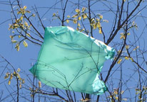

|
 |
| Plastic Project |
INTRODUCTION “There’s a great future in plastics. Think about it.” This line from The Graduate captured the 20th century hope and opportunity surrounding this new class of flexible and inexpensive materials. Derived from the Greek plastikos, to mold or form, plastics freed design from the constraints of natural materials. Whether naturally derived and first imitating biological materials, as in 19th c. celluloid, or derived from petroleum and untethered from nature as in 1950s polyolefin hulahoops, polymeric materials represented a new kind of freedom and flexibility. Now plastics are so prevalent in nearly every object in the world around us, associated with food, clothing, and shelter, that we barely notice them. In fact, plastic is ubiquitous not only as a material but as a metaphor, including new forms of biological design and adaptation that we could never have anticipated before. With stem cells and neuroplasticity come a newfound appreciation for the ways that we are not fixed and determined, but mutable creatures, our cells and brains constantly adapting and responding to environmental and experiential cues. These advances, combined with others in polymer design, synthesis, fabrication and nanomedicine create hopeful possibilities for disease treatment, regeneration and repair, and have profound implications for learning and policy as well. But along with increased awareness of the interplay between the designed and natural world and improvements in analytical tools and technologies, longstanding ambivalence and apprehension about plastic is strengthened too. A lifecycle analysis of plastic reveals often petrochemical origins, voracious consumption, and its presence in unintended places, the ocean, urban landscapes and our bodies, underscoring that sustainability is a multifaceted concept and begging for renewable and biocompatible alternatives. While plastic/ity is modern, freeing, and state-of-the-art, it is also cheap and artificial imitation. We wonder sometimes whether we have taken our unleashed freedom and flexibility too far in refashioning our world and our very selves. The Plastic Project is an interdisciplinary workshop and network of people who will explore together thrilling scientific discoveries and design possibilities, along with environmental, health, and societal impacts.
POSSIBLE TOPICS Plastic in the Environment: Exterior Design
Plastic(ity) in the Body: Interior Design
SPEAKERS AND EVENTS
PARTICIPANTS The following persons have been informed, consulted, or have expressed enthusiasm about this project. Their many excellent suggestions were incorporated into the project proposal. Faculty, graduate students and advanced undergraduates in their programs can benefit, along with others across Grounds and in the community. Arts and Sciences
Architecture
Commerce
Darden
Engineering
Medicine
Programs
Community
PROPOSED ORGANIZATIONAL FORMAT, PLANNED DATES, AND VENUES The Plastic Project aims to spark inquiry, build community and foster collaboration across Grounds among curious scientists, scholars, and artists with synergistic interests and shared concerns. Participants from UVA professional schools will also play important roles. High profile speakers and innovators will be invited to stimulate new ideas and conversations. We will achieve these goals by: a) identifying and recruiting core players—faculty, graduate students, advanced undergraduates, and members of the community; b) establishing a network of engaged participants; c) making decisions together about optimal organizational structure and speaker selection; d) designing workshop sessions. After this Spring 2009 planning phase, workshop sessions will run throughout the 2009-10 academic year. Students will be involved with faculty in collaborative decision making, organizing, advertising, and hosting events in their fields. Rather than pay an hourly rate, their participation will make them eligible to apply for mini-grants to attend conferences, present their work on plastic/ity themes, or foster creative exploration. We envision disciplinary/thematic teams playing a key role in hosting the workshop in their departmental venues, along with a flexible presentation/discussion/refreshments format that accommodates high profile speakers and large crowds, as well as smaller more intimate gatherings to ensure cohesion, continuity, and ongoing debate among participants from session to session. It might be appropriate for advanced undergrads to request independent study or research credit for their participation. Publications, creative works, a web presence, a course for credit, and other joint ventures could surely emerge from this collaborative endeavor.
BUDGET We gratefully acknowledge Page Barbour Fund support from the College of Arts and Sciences and the National Science Foundation. We plan to network and strategize with interested persons and departments to raise money from various sources and to cost share with other programs for maximum benefit. This will be particularly important for high profile speakers who could charge fees for appearances. We also anticipate a website that could serve as a clearinghouse for information about other programs and opportunities around Grounds and in the community with synergistic materials, green chemistry/sustainability and plasticity themes of interest to Plastic Project participants.
For more information contact plastic@virginia.edu. |
|